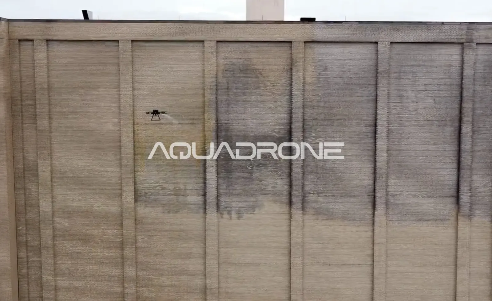

04/07/26
ניקוי מבני תעשייה ותשתיות באמצעות רחפן – פתרון לשטחים גדולים וגבוהים
ניקוי מבני תעשייה מציב אתגרים שלא קיימים במבני מגורים או משרדים רגילים: שטחים ענקיים, גבהים חריגים, ולעיתים קרובות שכבות פיח ולכלוך תעשייתי עמיד שהצטבר לאורך שנים. עבור מפעלים, מחסנים ומתקני תשתית, גם הפסקת פעילות קצרה לצורך תחזוקה עולה כסף — מה שהופך את שיטת הניקוי לשיקול קריטי לא פחות מהתוצאה עצמה.
האתגרים הייחודיים של ניקוי מבני תעשייה
שטחים נרחבים — מבני תעשייה ומחסנים לרוב פרוסים על שטח גדול משמעותית ממבנה מגורים טיפוסי, מה שהופך שיטות ניקוי איטיות ללא כדאיות מבחינת זמן ועלות.
גבהים חריגים — ארובות, מגדלי אחסון ומבני ייצור גבוהים דורשים ציוד גישה מורכב ויקר בשיטות מסורתיות.
לכלוך תעשייתי עמיד — פיח, שמנים ומשקעים כימיים דורשים לרוב חומרי ניקוי חזקים יותר מאשר לכלוך סביבתי רגיל, על פי ההנחיות המקצועיות של המשרד להגנת הסביבה בנוגע לפליטות תעשייתיות.
רגישות תפעולית — עצירת קו ייצור או פעילות מחסן, ולו לשעות בודדות, יכולה לעלות למפעל הרבה יותר מעלות הניקוי עצמו.
איך ניקוי מבני תעשייה בעזרת רחפן פותר את האתגרים האלה?
כיסוי שטח מהיר — רחפן מכסה שטחי חזית גדולים בקצב מהיר משמעותית משיטות ידניות, מה שמקצר את זמן ההשבתה הנדרש.
גישה לגבהים קיצוניים ללא ציוד נוסף — ארובות ומגדלים גבוהים מטופלים באותה יעילות כמו קומות נמוכות, ללא צורך במנופים או פיגומים מיוחדים.
חומרי ניקוי מותאמים ללכלוך תעשייתי — מערכת הריסוס מתכווננת לפי סוג המשקע — פיח, שמן או משקעים כימיים — כדי להבטיח פירוק יעיל.
עבודה שמצמצמת השבתה — בזכות המהירות, ניתן לתאם עבודה בשעות שפל של הפעילות התפעולית, כך שההשפעה על קו הייצור מינימלית.
למי זה מתאים במיוחד?
מפעלי ייצור ותעשייה, מחסני לוגיסטיקה גדולים, מתקני תשתית (תחנות כוח, מכוני מים, אנטנות), ומרכזי הפצה עם חזיתות גבוהות וחשופות ללכלוך סביבתי מוגבר.
סיכום
ניקוי מבני תעשייה דורש שילוב נדיר של מהירות, כיסוי שטח נרחב, וגישה לגבהים קיצוניים — בדיוק את השילוב שניקוי בעזרת רחפן מספק. עבור מפעלים ומתקני תשתית, זה מתורגם לפחות זמן השבתה, פחות סיכון בטיחותי, ותוצאה עקבית בכל ביקור.
מנהלים מתקן תעשייתי או מחסן גדול? צרו קשר לתיאום סקר אתר, או קראו עוד על שירות ניקוי תעשייה ותשתיות שלנו.